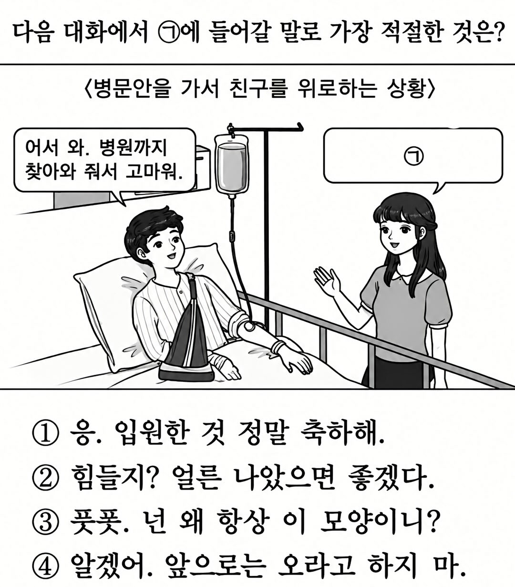

정말 쉬운 검정고시 1번 문제.jpg
댓글
3번!
일단 1,3,4는 찐친인거 같긴 한데
4번아님?
4번이네
3번이 맛도리네
3
1이나 3중에 하나인데.... 어렵네
풋폿은 뭐여 ㅋㅋ
저 남자애 이름이 풋폿임
풋폿...뷰룻
팔 뿌라진 정도면 3번이지 혈육이면 4번도 가능
3
3 메스가키
데프픗
닥 3
3 고르면 남자도 벌떡 일어날듯
1,3,4
이제 시험일러스트도 ai쓰고 검수도 안하네
3번말고 답이있나??
남자애 이름이 풋풋인가보네
애를 가져봐~
뒷빵사고 100대0 무과실 피해자라 합의금 넉넉하게 챙길 상황이라면 1번이 맞는게 아닌가 싶기도하고.. 그래서 남자애 표정도 여유롭자네
픗폿
허저업~❤️
데프프픗 넌 왜 항상 이 모양인 데스(내가 챙겨주는 수밖에 없는 데샷)
1. 부랄친구
2. 친구
3. 짝사랑
4. 여동생
3번에서 반응 옴

오른손을 다쳐서 못움직이니까 힘들다고 말하니까
1번 톰보이계는 헤에~ 진짜로 너 못움직이는걸까나? 으럇으럇 하면서 장난으로 올라탔는데 솟아오른거 보고 흐흥 여기는 움직이고있쟈나이카 하면서 해결해주고
2번 정실계는 에엣?! 다이죠부나노? 움직일 수 없으면...쌓여있는거지? 와따시가 쟌토 풀어줄테니까... 하면서 해줄 거 같고
3번 츤데레계는 눈치 한번 스윽 보다가 슬쩍 가랑이를 보더니 바..밧카! 왜이렇게 커진거냐구! 나 아니었으면 어쩌려구! 하면서 해결해줄거같고
4번 전여친계는 흠흠.. 이제 나말고도 온나는 있었을거 아냐.. 하다가 엣.. 진짜 와따시 밖에 없다고? 하면서 눈돌아가서 해결해줄듯 ㄹㅇㅋㅋ
1,2,3,4 다와서 수라장 전개도 맛있거든요
데프픗 똥닌겐
쑻쑻
폿폿도 아니고 풋풋도 아니고 풋폿이었네. 존나 디테랄 신경쓴거보니 3번임
?? : 그치만 손가락이.....손가락이............
이건 누가 봐도 3번이잖아?
풋폿은 뭐임?
foot foot
1234 순서대로임
5. 니 꼬츄 까는데 왜 나까지 와야하니?
폿폿